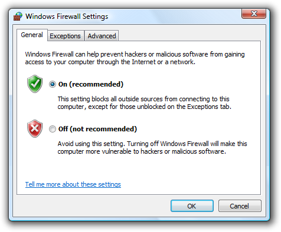
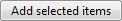

[!NOTE] This design guide was created for Windows 7 and has not been updated for newer versions of Windows. Much of the guidance still applies in principle, but the presentation and examples do not reflect our current design guidance.
With command buttons in Windows 7, users initiate immediate actions.
A typical command button.
The default command button is invoked when users press the Enter key. It is assigned by the developer, but any command button becomes the default when users tab to it.
[!Note]
Guidelines related to layout are presented in a separate article.
To decide, consider these questions:
There are five or more possible actions.
Users need to view additional information before making a decision.
Users need to interact with the choices (perhaps to see additional information) before making a decision.
Users view the choices as options instead of different commands.
Correct: 
In this example, radio buttons are combined with OK and Cancel buttons to provide additional information about the options.
Incorrect:
In this example, command buttons alone make it difficult for users to make an informed decision.
Using ellipses
While command buttons are used for immediate actions, more information might be needed to perform the action. Indicate a command that needs additional information (including confirmation) by adding an ellipsis at the end of the button label.
In this example, the Print... command displays a Print dialog box to gather more information.

By contrast, in this example the Print command prints a single copy of a document to the default printer without any further user interaction.
Proper use of ellipses is important to indicate that users can make further choices before performing the action, or even cancel the action entirely. The visual cue offered by an ellipsis allows users to explore your software without fear.
This doesn't mean you should use an ellipsis whenever an action displays another window. Use an ellipsis only when additional information is required to perform the action. Consequently, any command button whose implicit verb is to "show another window" doesn't take an ellipsis, such as with the commands About, Advanced, Help (or any other command linking to a Help topic), Options, Properties, or Settings.
Generally, ellipses are used in user interfaces to indicate incompleteness. Commands that show other windows aren't incomplete; they must display another window and additional information isn't needed to perform their action. This approach eliminates screen clutter in situations where ellipses have little value.
Note: When determining if a command button needs an ellipsis, don't use the need to elevate privileges as a factor. Elevation isn't information needed to perform a command (rather, it's for permission) and the need to elevate is indicated with the security shield.
If you do only one thing... Use a concise, specific, self-explanatory label that clearly describes the action that the command button performs, and use an ellipsis when appropriate.
Command buttons have several usage patterns:
| Usage | Example |
|---|---|
| Standard command buttons You can use standard command buttons to initiate an immediate action. |  A standard command button. A standard command button. |
| Default command buttons The default command button in a window indicates the command button that will be activated when users press the Enter key. |  A default command button. Any command button becomes the default when users tab to it. If the input focus is on a control that isn't a command button, the command button with the default button attribute becomes the default. Only one command button in a window can be the default. A default command button. Any command button becomes the default when users tab to it. If the input focus is on a control that isn't a command button, the command button with the default button attribute becomes the default. Only one command button in a window can be the default. |
| Lightweight command buttons A lightweight command button is similar to a standard command button, except its button frame is shown only on mouse hover. | In this example, the command has a very lightweight appearance (similar to a link) until the user hovers over the command, at which point it is drawn with a button frame. You can use lightweight command buttons in situations where you would use a standard command button, but you want to avoid always showing the button frame. Lightweight command buttons are ideal for commands that you want to underemphasize and using a link wouldn't be appropriate. |
| Menu buttons Use a menu button when you need a menu for a small set of related commands. | A menu button with a small set of related commands. Use a menu button when a menu bar is undesirable, such as in a dialog box, toolbar, or other window that doesn't have a menu bar. A single downward-pointing triangle indicates that clicking the button will drop down a menu. |
| Split buttons Use a split button to consolidate a set of variations of a command, especially when one of the commands is used most of the time. |  a collapsed split button. like a menu button, a single downward-pointing triangle indicates that clicking the rightmost portion of the button will drop down a menu. a collapsed split button. like a menu button, a single downward-pointing triangle indicates that clicking the rightmost portion of the button will drop down a menu.  a dropped-down split button. in this example, a split button is used to consolidate six variations of the open command. the regular open command is used most of the time, so users normally don't need to see the other commands. using a split button saves a significant amount of screen space, while also providing powerful choices. unlike a menu button, clicking the left portion of the button performs the action on the label directly. split buttons are effective in situations where the next action with a specific tool is likely to be the same as the last action. in this case, the label is changed to the last action, as with a color picker: In this example, the label is changed to the last action. a dropped-down split button. in this example, a split button is used to consolidate six variations of the open command. the regular open command is used most of the time, so users normally don't need to see the other commands. using a split button saves a significant amount of screen space, while also providing powerful choices. unlike a menu button, clicking the left portion of the button performs the action on the label directly. split buttons are effective in situations where the next action with a specific tool is likely to be the same as the last action. in this case, the label is changed to the last action, as with a color picker: In this example, the label is changed to the last action. |
| Browse buttons Use a browse button to display a dialog box to help users select a valid value. | dialog boxes launched by a browse button help users select files, folders, computers, users, colors, and so on. they are typically combined with an unconstrained control such as a text box. they're usually labeled browse, other, or more, and always have an ellipsis to indicate that more information is required.  a text box with a browse button. for windows that have many browse buttons, you can use a short version: A short browse button. a text box with a browse button. for windows that have many browse buttons, you can use a short version: A short browse button. |
| Progressive disclosure buttons Use a progressive disclosure button to show or hide infrequently used options. | hiding infrequently used options until they are needed is called progressive disclosure. double chevrons are used to indicate progressive disclosure, and they point in the direction in which the revealing or hiding will take place:  after the button is clicked, its label changes to indicate that the next click will have the opposite effect: after the button is clicked, its label changes to indicate that the next click will have the opposite effect:  For more information and examples, see Progressive Disclosure Controls. For more information and examples, see Progressive Disclosure Controls. |
| Directional buttons Use a directional button to indicate the direction in which an action will take place. | in this case, a single angle bracket is used instead of a double chevron: A directional button indicates the direction of action. |
Correct: 
In this example, the button size is standard and looks professional.
Incorrect:
In this example, the button is too small.
Incorrect:
In this example, the button has too much space around the label.
Correct:
In this example, the arrow graphic helps users visualize the results of the command.
Correct: 
In this example, standard symbols are combined with text to aid comprehension
Incorrect:
In this example, the cancel graphic adds nothing to the text.
Recommended sizing and spacing for command buttons.
Label every command button.
If the button has a graphic label only, assign its Name property to an appropriate text label. This enables assistive technology products such as screen readers to provide users with alternative information about the graphic.
This example shows graphic buttons; internally, these buttons are labeled Previous, Next, and Copy.
For short browse buttons (labeled "..."), the internal label should be Browse.
Assign a unique access key. For guidelines, see Keyboard.
Exceptions:
Prefer specific labels over generic ones. Ideally users shouldn't have to read anything else to understand the label. Users are far more likely to read command button labels than static text.
Acceptable:

In this example, OK and Cancel are acceptable but unspecific labels.
Better:
In this example, Burn CD is more specific than OK.
Incorrect:
In this example, Cancel should be used instead of Don't Burn CD.
Start labels with an imperative verb and clearly describe the action that the button performs. Don't use ending punctuation.
While short labels are preferred, use enough text to explain the command sufficiently. Use a direct object (a noun after the verb) when the object is not apparent from context. Ideally users shouldn't have to read anything else to understand the label.
Acceptable:

In this example, a short label is acceptable if its meaning in context is readily apparent.
Better: (if Add isn't clear)

In this example, adding a noun to the verb aids users' comprehension.
Best: (if Add or Add items aren't clear)

In this example, the label is self-explanatory.
Use sentence-style capitalization. Doing so is more appropriate for Windows toneWindows tone and the use of short phrases for command buttons.
Don't use now in command button labels because the immediacy of the command can be taken for granted.

In this example, clicking the command button goes to a window or page that allows users to download.

In this example, clicking the command button performs the download.
Only one command in a task flow should be labeled with now. So, for example, a Download now command should never be followed by another Download now command.
Don't use later in command button labels if it implies an action that won't happen. For example, don't use Install later (in contrast to Install now) unless that command installs at a later time. Instead, use either Don't install or Cancel.
Incorrect:
In this example, Restart Later incorrectly implies that command restarts automatically at a later time.
Use an Advanced button only for options that are relevant to advanced users or require advanced user knowledge. Don't use an Advanced button for features that are considered technologically advanced. For example, a printer's stapling feature is not an advanced option, but its color management system is.
Incorrect: (if the options really aren't advanced)

In this example, Advanced is misleading.
Correct:
In this example, the label is more specific and accurate.
For command buttons that open other windows, choose a label that uses part or all of the secondary window's title bar text. For example, a command button labeled Browse might open a dialog box entitled Browse for Folder. Using the same terminology throughout the task helps to keep users oriented.
When asking a question, use labels that match the question. Don't use OK/Cancel to answer Yes/No questions.
Correct:

In this example, the buttons answer the question.
Incorrect:
In this example, the buttons don't answer the question.
End the label with an ellipsis if the command requires additional information to execute.
Correct: (if a Print options dialog is displayed)
In this example, after the button is clicked, the Print options dialog is displayed and requires more information from the user.
Don't use an ellipsis when the successful completion of the action is simply to display another window. The following commands never take an ellipsis: About, Advanced, Options, Properties, Help.
Incorrect:

In this example, after the button is clicked, the Options dialog is displayed, but more information from the user is not required.
In case of ambiguity (for example, the command label lacks a verb), decide based on the most likely user action. If simply viewing the window is a common action, don't use an ellipsis.
Correct:
More colors...
Version information
In the first example, users are most likely going to choose a color, so using an ellipses is correct. In the second example, users are most likely going to view the version information, making ellipses unnecessary.
For browse buttons, use short browse buttons (labeled "...") when there are more than two browse buttons in a window. Always use the short version when you want to display a browse button in a grid.
For directional buttons, use a single angle bracket and have it point in the direction where the action takes place.
The following table shows some common command button labels and their usage.
| Button label | Meaning | Access key |
|---|---|---|
| Back | In wizards and task flows, go to the previous page. | 'B' |
| Browse... | Display a dialog box to look for a file or object. | 'B' or 'r' |
| Options | Display the choices available to users for customizing a program. | 'O' |
| Pause | In progress dialog boxes, suspend the task. | 'P' |
| Personalize | Customize a core experience that is crucial to the user's personal identification with a program. | 'P' |
| Preferences | Don't use. Use Options instead. | Not applicable. |
| Properties | Display the attributes and settings for an object. | 'P' or first 'r' |
| Save | Save a group of settings, or save a file or object using its current name. | 'S' |
| Save as... | Save a file or object using a specified name. | Second 'a' |
| Settings | Don't use. Use Options instead. | Not applicable. |
| Troubleshoot | Don't use. Use a specific Help link instead. | Not applicable. |
For guidelines about commit button labels (OK, Cancel, Yes/No, Close, Stop, Apply, Next, Finish, Done), see User Interface Text.
When referring to command buttons:
Example: Click Print to print the document.